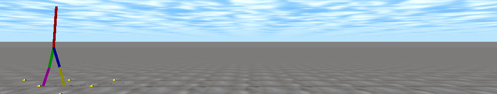

DynOpt HW 2
Kazu Otani
Using Function Optimization To Find Policies
Writeup
Code
Gaits
Original controller (not optimized)

Fast walking

Heavy torso

Gait optimized to withstand occasional impulses to the torso...
In perturbation-free environment

Recovering from push (200N for 0.01s in middle of screen)

Falling from push (250N for 0.01s in middle of screen)

Controller optimized in perturbation-free environment, with same optimization paramters

Controller optimized for constant white noise torso perturbations. Notice how carefully it walks

Controller fails when white noise magnitude is increased by >50%
